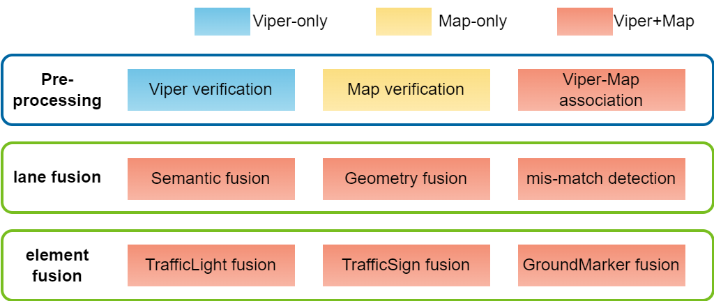
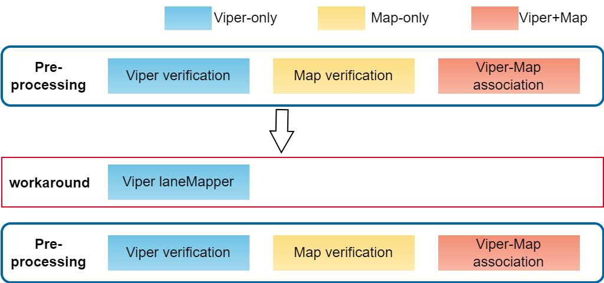
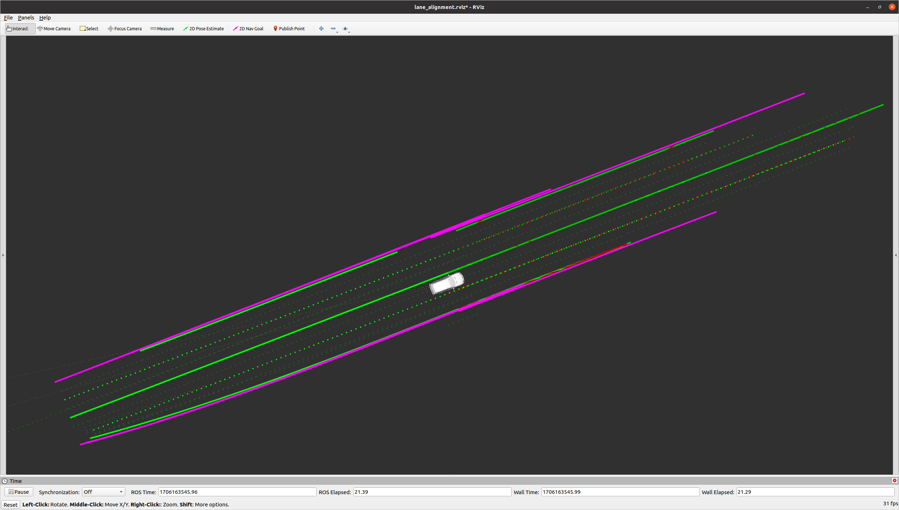
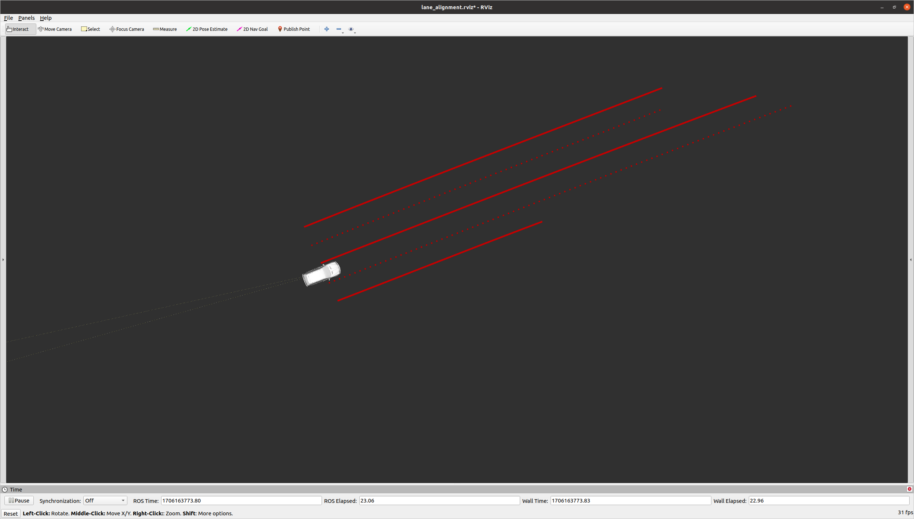
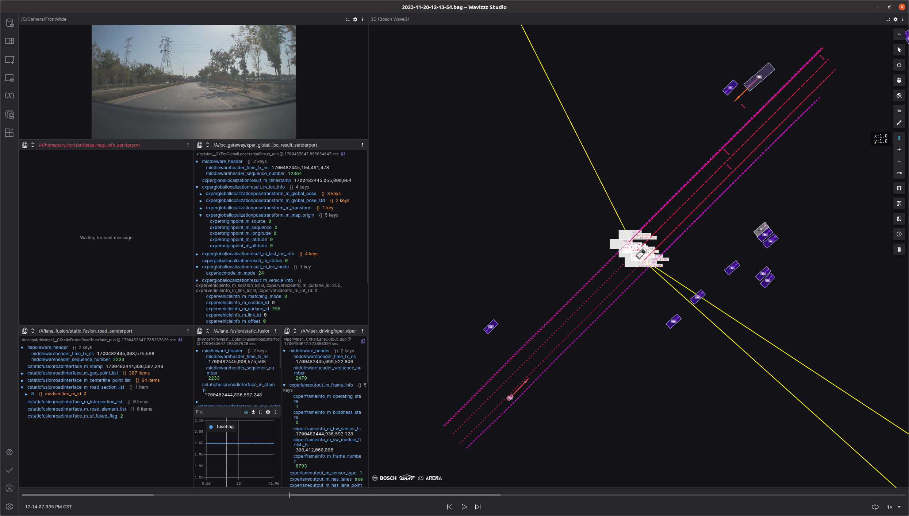

LaneFusion modules
LaneFusion modules
Lane Fusion's main work is to integrate the information of VIPER and HDMAP to verify and complement the heresy signal
Viriication module is to verify the rationality of the input signal, and the effect of inhibiting the error data
Viper-Map Association module is the same lane lines and road elements in the same as VIPER and HDMAP

LaneMapper
Given that the position jitter and semantic attribute jumping of VIPER PERception cannot be solved, the LANEFUSION module has developed Lane Mapper's WorkAround function, making the function of LANE FUSION to meet subsystem requirements.
But the Lane Mapper module does not belong to the subsystem of Lane Fusion.The quality of VIPER perceive also requires the VIPER module to ensure.
Lanemapper uses SLAM technology to create a local map of Viper Lane; local maps are better than single -frame VIPER LANE's FOV and stability.

Lanemapper online time:
Preliminary version completion time: 20230526, https://sourcecode01.de.bosch.com/projects/PJW3_ALG/repos/lanemodel/commits/fde6014efcb814149edaf219d67a220e776cb72b
Access to viper only: 20230728, https://sourcecode01.de.bosch.com/projects/PJW3_ALG/repos/lanemodel/commits/3ceb9ee0e073ee654c172261595682b25d7567b1#include/algo/laneMapper.hpp
Access with Rigid Alignment: 20230814, https://sourcecode01.de.bosch.com/projects/PJW3_ALG/repos/lanemodel/commits/14405e000414a4e954dd7b7e7cdb5921b393a79c#src/algo/laneFusion.cpp
Lanemapper Current Status:
Including lane lines, Roaddge, multi -frame attributes and location fusion, central line calculation
- 
Single -frame viper result
- 
Viper Rear's rear view of the lane line effect:
In November 2023, the car lane points were made in November, and the effect was as follows:
- 
But now it is closed, only the front car lane line
Demand for WR VIPER
230519
WR Viper support